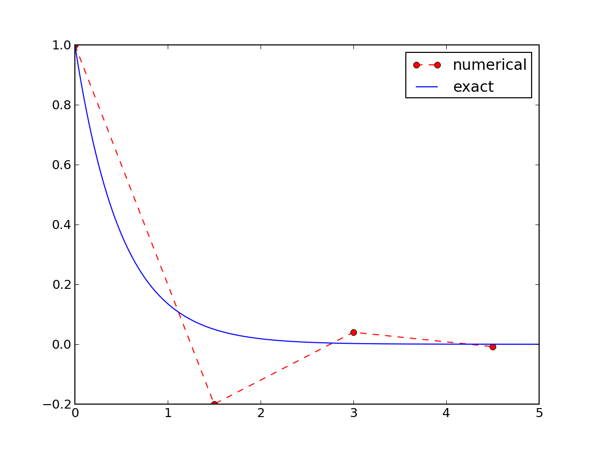
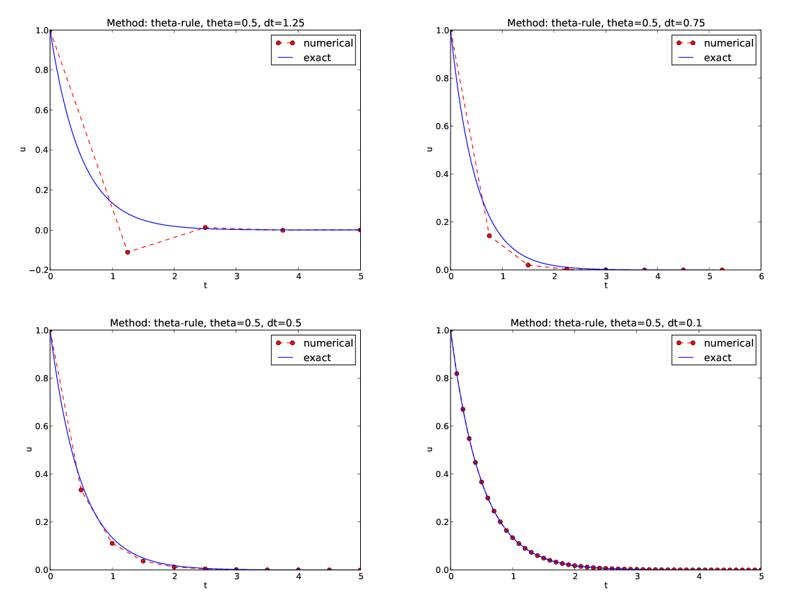

Problem setting and methods


The primary goal of this demo talk is to demonstrate how to write talks with DocOnce and get them rendered in numerous HTML formats.
This version
utilizes deck slides with the theme cbc.
Speaker notes show up by pressing "n".
The talk investigates the accuracy of three finite difference schemes for the ordinary differential equation \( u'=-au \) with the aid of numerical experiments. Numerical artifacts are in particular demonstrated.
|
Here,
|
|
The \( \theta \) rule,
def solver(I, a, T, dt, theta):
"""Solve u'=-a*u, u(0)=I, for t in (0,T]; step: dt."""
dt = float(dt) # avoid integer division
N = int(round(old_div(T,dt))) # no of time intervals
T = N*dt # adjust T to fit time step dt
u = zeros(N+1) # array of u[n] values
t = linspace(0, T, N+1) # time mesh
u[0] = I # assign initial condition
for n in range(0, N): # n=0,1,...,N-1
u[n+1] = (1 - (1-theta)*a*dt)/(1 + theta*dt*a)*u[n]
return u, t
# Set problem parameters
I = 1.2
a = 0.2
T = 8
dt = 0.25
theta = 0.5
|\pause|
from solver import solver, exact_solution
u, t = solver(I, a, T, dt, theta)
|\pause|
import matplotlib.pyplot as plt
plt.plot(t, u, t, exact_solution)
plt.legend(['numerical', 'exact'])
plt.show()

Exact solution of the scheme:
Key results:
Only the Backward Euler scheme is guaranteed to always give qualitatively correct results.
/